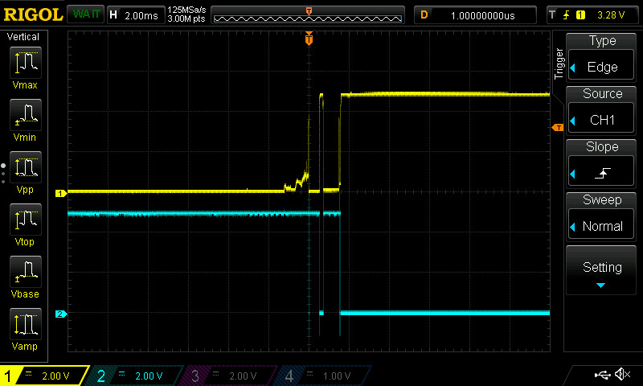
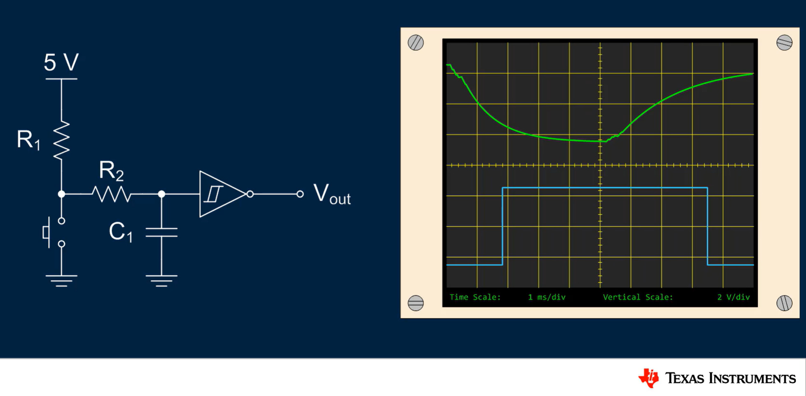
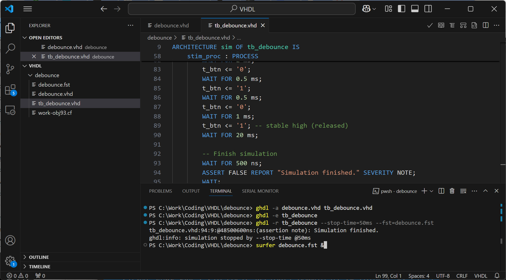
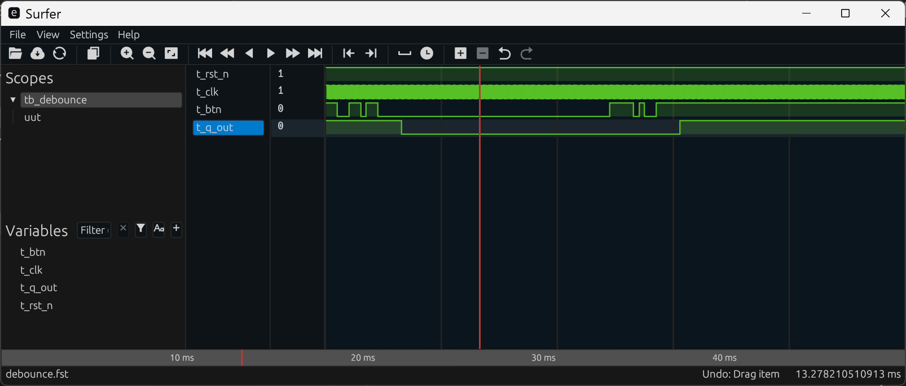
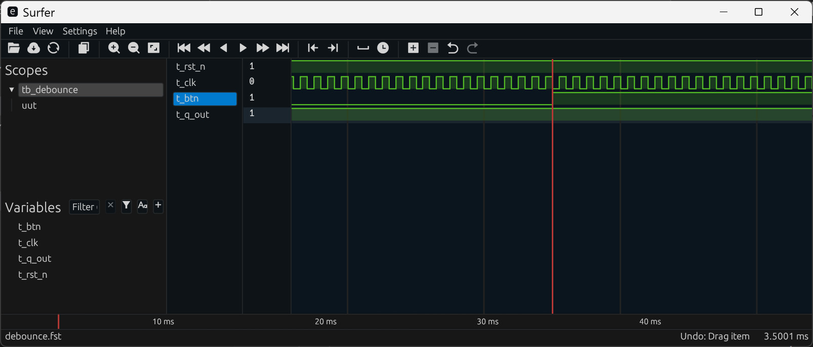
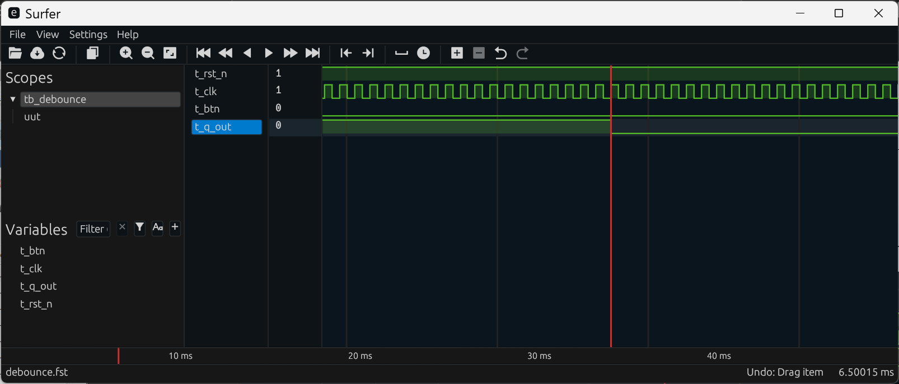

Tutorial: Debouncing Mechanical Switch Inputs & VHDL Simulation#
Techniques for Debouncing Mechanical Switch Inputs#
When pressing or releasing a mechanical push button, it may bounce and cause rapid, unintended changes in logic states. If such a push-button circuit is used as a digital input to an FPGA device, this bouncing effect should be suppressed.

Figure: I/O signal waveforms captured with a digital oscilloscope, showing the effects of switch bounce.
There are different approaches to avoid or reduce bouncing:
- Hardware approach: Use an RC delay circuit in combination with a buffer IC that has a Schmitt trigger input.
- Digital approach: Implement user-defined debounce logic using FPGA resources.

Figure: Hardware approach for switch debouncing
The purpose of debounce logic is to detect a rising or falling edge on the input signal, ensuring that the signal remains stable (i.e., does not change) for a specific time interval (e.g., 10–50 milliseconds) after the transition. If this condition is met, the edge is considered valid — either a valid rising edge or a valid falling edge.
VHDL Modeling of Debounce Logic#
In this tutorial, a basic switch debouncing module is modeled in VHDL.
- The switch (asynchronous) input signal is first fed into a synchronizer consisting
of at least two cascaded flip-flops forming a shift register (
sync_reg), used to avoid "metastability". - The output of the shift register is compared against the previously saved logic value
(
saved_logic). If a logic change is detected, an internal counter starts counting. - If the input remains unchanged and stable, the counter increments.
- Once the counter reaches
COUNT_MAX, thesaved_logicis updated with the new stable input value. - This debounce logic acts as a transition filter to suppress spurious glitches caused by switch bounce.
VHDL Code Listing
-- File: debounce.vhd
LIBRARY IEEE;
USE IEEE.STD_LOGIC_1164.ALL;
USE IEEE.NUMERIC_STD.ALL;
ENTITY debounce IS
GENERIC (
COUNT_MAX : INTEGER := 500000 -- number of clock cycles
);
PORT (
CLK : IN STD_LOGIC;
RST_N : IN STD_LOGIC;
D : IN STD_LOGIC;
Q : OUT STD_LOGIC
);
END ENTITY;
ARCHITECTURE rtl OF debounce IS
SIGNAL counter : INTEGER RANGE 0 TO COUNT_MAX := 0;
SIGNAL sync_reg : STD_LOGIC_VECTOR(1 DOWNTO 0) := (OTHERS => '1');
SIGNAL saved_logic : STD_LOGIC := '1';
BEGIN
PROCESS (CLK, RST_N)
BEGIN
IF RST_N = '0' THEN
sync_reg <= (OTHERS => '1');
saved_logic <= '1';
counter <= 0;
ELSIF rising_edge(CLK) THEN
-- 2-stage synchronizer using D-type flip-flops
sync_reg <= sync_reg(0) & D;
IF sync_reg(1) /= saved_logic THEN
IF counter = COUNT_MAX THEN
saved_logic <= sync_reg(1);
counter <= 0;
ELSE
counter <= counter + 1;
END IF;
ELSE
counter <= 0; -- reset counter
END IF;
END IF;
END PROCESS;
Q <= saved_logic;
END ARCHITECTURE;
VHDL Simulation#
To simulate the VHDL testbench, a VHDL simulator is required such as:
- Questa Intel Start Edition (commercial, free for Quartus Prime Lite)
- GHDL (open source VHDL simulator)
In this section:
- Visual Studio Code (VS Code) and a VHDL extension are used to write and manage VHDL code.
- GHDL (for Windows) is used to compile and run simulations.
- GHDL is a command-line tool (no GUI) available for Windows, Linux and Mac OSX.
- GHDL: pre-built binaries
- GTKWave or Surfer is used for waveform visualization.
⚠️ Ensure that the PATH environment variable includes the directories containing the executable files for GHDL and Surfer before running commands in
a terminal or console.
VHDL Code Listing
-- File: tb_debounce.vhd
LIBRARY IEEE;
USE IEEE.STD_LOGIC_1164.ALL;
USE IEEE.NUMERIC_STD.ALL;
ENTITY tb_debounce IS
END ENTITY;
ARCHITECTURE sim OF tb_debounce IS
-- Component under test
COMPONENT debounce
GENERIC (
COUNT_MAX : INTEGER := 100000
);
PORT (
CLK : IN STD_LOGIC;
RST_N : IN STD_LOGIC;
D : IN STD_LOGIC;
Q : OUT STD_LOGIC
);
END COMPONENT;
-- Signals
SIGNAL t_clk : STD_LOGIC := '0';
SIGNAL t_rst_n : STD_LOGIC := '0';
SIGNAL t_btn : STD_LOGIC := '1'; -- active-low push button
SIGNAL t_q_out : STD_LOGIC;
-- Clock period
CONSTANT clk_period : TIME := 20 ns; -- 50MHz clock
BEGIN
-- Instantiate the DUT
uut : debounce
GENERIC MAP(
COUNT_MAX => 100000
)
PORT MAP(
CLK => t_clk,
RST_N => t_rst_n,
D => t_btn,
Q => t_q_out
);
-- Clock generation
clk_process : PROCESS
BEGIN
WHILE TRUE LOOP
t_clk <= '0';
WAIT FOR clk_period / 2;
t_clk <= '1';
WAIT FOR clk_period / 2;
END LOOP;
END PROCESS;
-- Stimulus
stim_proc : PROCESS
BEGIN
t_btn <= '1';
-- Initial reset
t_rst_n <= '0';
WAIT FOR 100 ns;
t_rst_n <= '1';
WAIT FOR 1 ms;
-- Simulate button press with bounce
-- Falling edge (button press starts)
t_btn <= '0';
WAIT FOR 1 ms;
t_btn <= '1';
WAIT FOR 1 ms;
t_btn <= '0';
WAIT FOR 0.5 ms;
t_btn <= '1';
WAIT FOR 1 ms;
t_btn <= '0'; -- stable low (pressed)
WAIT FOR 20 ms;
-- Simulate button release with bounce
t_btn <= '1';
WAIT FOR 2 ms;
t_btn <= '0';
WAIT FOR 0.5 ms;
t_btn <= '1';
WAIT FOR 0.5 ms;
t_btn <= '0';
WAIT FOR 1 ms;
t_btn <= '1'; -- stable high (released)
WAIT FOR 20 ms;
-- Finish simulation
WAIT FOR 500 ns;
ASSERT FALSE REPORT "Simulation finished." SEVERITY NOTE;
WAIT;
END PROCESS;
END ARCHITECTURE;
The following commands are used to compile the VHDL source code files,
run the simulator and visualize the waveform files (.vcd or .fst).
# Check the version of GHDL (e.g. GHDL 6.0.0-dev).
ghdl version
# Analyze the design file and the testbench file.
ghdl -a --std=08 debounce.vhd tb_debounce.vhd
# Elaborate the testbench
ghdl -e tb_debounce
# Run the simulation with .vcd output (for GTKwave).
ghdl -r tb_debounce --stop-time=50ms --vcd=waveform.vcd
gtkwave waveform.vcd
# Run the simulation with .vcd output (for Surfer).
ghdl -r tb_debounce --stop-time=50ms --fst=debounce.fst
surfer debounce.fst

Figure: VS Code IDE used for VHDL code editing and command-line execution in the integrated terminal.



Figure: Waveform visualization with Surfer
This work is licensed under a Creative Commons Attribution-ShareAlike 4.0 International License.
Created: 2025-06-01 | Last Updated: 2025-06-01